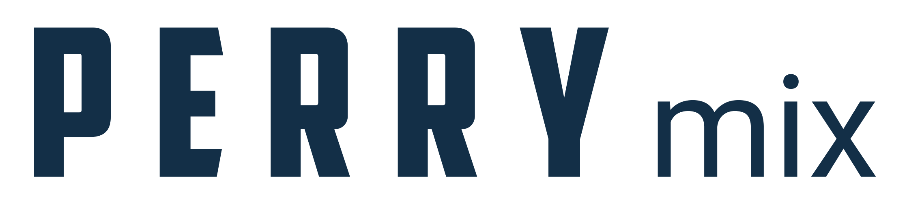

Interní výběr / 2026
Šest samostatných směrů pro CZ homepage. Stejné logo, stejná paleta převzatá z origo webu Perry Equipment, stejný ověřený obsah z oficiálního datasheetu. Liší se jen tvar - typografie, kompozice a způsob, jak vede návštěvníka k poptávce.
Návrh 01
Černá je celá stránka, ne jen doplněk. Stroj svítí ze tmy, modrá je jediné světlo. Nejvýraznější kontrast vůči všemu, co konkurence v oboru dělá.
Návrh 02
Čte se jako stránka ze strojírenského katalogu. Serifové nadpisy, vlasové linky, číslované sekce, tabulka velikostí jako hlavní hrdina. Téměř bez barvy.
Návrh 03
Milimetrový rastr, kótování stroje, rohové razítko jako na technickém výkrese. Sekce mají čísla revizí. Sází na inženýrskou tradici.
Návrh 04
Stroj přes celou obrazovku, text je popiska. Kondenzované verzálky, celoplošné pásy pro každé odvětví, lepivý sloupec u specifikace.
Návrh 05
Vlevo pevný černý panel s navigací, telefonem a poptávkou - nikdy nezmizí. Vpravo obsah. Uvnitř konfigurátor: kliknete na velikost, uvidíte parametry.
Návrh 06
Silné černé linky, kondenzované verzálky odvozené z loga, nulové zaoblení, hustá data. Vypadá jako výrobní štítek stroje. Nejhlasitější varianta.